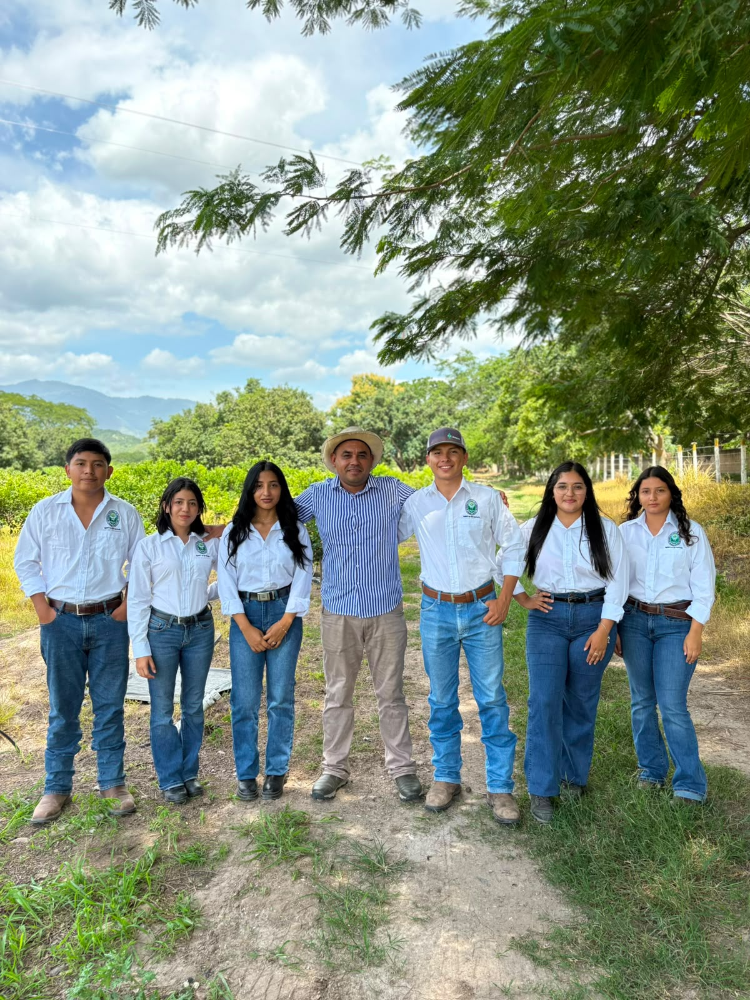
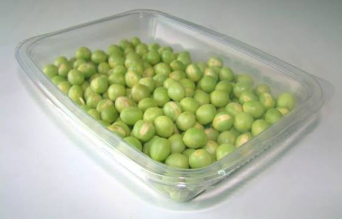

AGROVERDE
AGROVERDE
AGROVERDE
AGROVERDE
Cultivo de alta calidad (Pisum sativum L.) desarrollado en la Ciudad de Comayagua para el mercado internacional.
El campo no solo produce alimentos; cultiva el futuro, la constancia y el desarrollo de nuestra tierra. Con esfuerzo y conocimiento técnico, transformamos la agricultura de Honduras en calidad de exportación para el mundo.
Conoce al equipo gerencial y académico detrás de este plan de inversión sostenible.
Universidad Nacional de Agricultura

La arveja o guisante es uno de los cultivos más antiguos y fundamentales de la agricultura. Posee la extraordinaria característica de fijar nitrógeno de forma natural en el suelo, reduciendo la dependencia de fertilizantes químicos y actuando como cultivo de cobertura ideal para evitar la erosión.
Nuestra meta es producir frutos de alta calidad listos para el consumo (Ready-to-eat), aplicando las mejores medidas de comercialización internacional.

Excelente fuente natural de fibra, hierro y vitaminas A, B y C indispensables para una dieta balanceada.
Ricas en antioxidantes esenciales que protegen de forma directa las funciones de la vista.
Colabora activamente en el buen funcionamiento intestinal y ayuda a fortalecer los huesos.
El mercado estadounidense absorbe arveja en múltiples formatos. Para acceder de forma segura, el SENASA como núcleo regulador exige:
Estados Unidos destaca fuertemente como uno de los importadores más dinámicos de arveja fresca y refrigerada (sugar snap, arveja china y verde) proveniente de proveedores estratégicos de Latinoamérica.